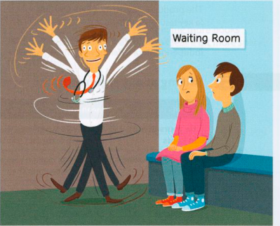

Bài tập
10.1 Những ai trong số những người này đang ở trong tình huống tốt (theo quan điểm của họ) và ai đang ở trong tình huống xấu? Các thành ngữ đều bắt nguồn từ phần B đối diện.
- Jack đã được let off the hook (tha bổng/thoát trách nhiệm).
- Carmen luôn at everyone’s beck and call (sẵn sàng phục tùng mọi người/gọi dạ bảo vâng).
- Lily đã phải carry the can (gánh hậu quả/chịu trận).
- Bea đã get her own way (đạt được ý nguyện/làm theo ý mình).
10.2 Hoàn thành mỗi thành ngữ dưới đây bằng một giới từ.
- Tự ý hành động bất chấp luật pháp (take the law ............................................. your own hands) là sai trái.
- Đã đến lúc tôi phải thiết lập kỷ cương (laid ............................................. the law) và buộc họ thực hiện nghĩa vụ của mình.
- Tôi không muốn trở thành mục tiêu hứng chịu (be ............................................. the receiving end of) cơn nóng nảy của anh ta. (Đưa ra hai đáp án.)
- Ông Bob dường như đã tự tung tự tác bất chấp quy định (become a law ............................................. himself) tại nơi làm việc. Ông ấy chỉ làm những gì mình thích.
- Không ai bảo bạn phải làm gì cả. Bạn chỉ được để cho tự xoay xở (left ............................................. your own devices).
10.3 Viết lại phần gạch chân của mỗi câu dưới đây bằng một thành ngữ.
- I think there is a reason she’s not telling us about that letter she sent to the boss. (Tôi nghĩ có một động cơ ngầm mà cô ấy không nói với chúng ta về bức thư cô ấy đã gửi cho sếp.)
- I thought I was going to have to represent my class at the staff-student meeting, but they’ve told me I don’t have to. (Tôi đã nghĩ mình sẽ phải đại diện cho lớp tại cuộc họp giữa nhân viên và sinh viên, nhưng họ nói tôi không cần phải làm vậy nữa.)
- She’s an awful boss to work for; the secretaries have to do what she wants whenever she wants it, eight hours a day, seven days a week. (Bà ta là một người sếp tồi tệ; các thư ký phải phục tùng mọi yêu cầu của bà ta bất cứ lúc nào, tám tiếng một ngày, bảy ngày một tuần.)
- He has had to take a lot of criticism from the press in recent weeks. (Anh ta đã phải hứng chịu nhiều lời chỉ trích từ báo chí trong những tuần gần đây.)
- They cause all the trouble, and I always have to take the blame. (Họ gây ra mọi rắc rối, còn tôi thì luôn phải chịu trận/gánh trách nhiệm.)
- I don’t want someone telling me what to do all the time. I’d rather be allowed to make my own decisions about how to do things. (Tôi không muốn có người luôn bảo mình phải làm gì suốt ngày. Tôi muốn được tự quyết định cách thực hiện công việc hơn.)
10.4 Viết một hoặc một vài câu cho mỗi thành ngữ sau để thể hiện ý nghĩa của chúng.
- a hidden agenda (động cơ ẩn giấu/ý đồ ngầm)
- a spin doctor (chuyên gia định hướng dư luận / cố vấn truyền thông)
- bend the rules (lách luật/nới lỏng quy định)
- go to the polls (đi bỏ phiếu/đi bầu cử)

Đến lượt bạn
Hãy đọc các bài xã luận và/hoặc thư gửi Ban biên tập trên một tờ báo tiếng Anh, hoặc xem/nghe một chương trình tin tức tiếng Anh trên đài phát thanh/truyền hình/Internet. Hãy chú ý xem có bao nhiêu thành ngữ xuất hiện trong tin tức chính trị. Hãy ghi chú lại bất kỳ thành ngữ nào không có trong bài học này.